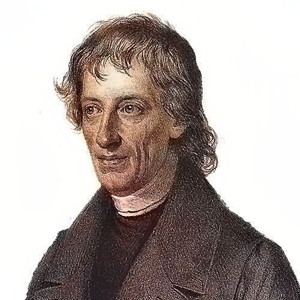

Frege in Context
Bob Brandom–Fall 2025
Wednesdays at 1pm in 1008 B, Cathedral of Learning
Week 1. August 27, 2025: Introduction
Weekly Materials:
Kite of Ampliativity
Resources for Context:
Alberto Coffa, The Semantic Tradition from Kant to Carnap: To the Vienna Station (1991)
Danielle Macbeth, Realizing Reason (2014)
Week 2. September 3, 2025: Begriffsshrift (1879)
Read:
Begriffsschrift Intro, §§1-12
“Boole’s Logical Calculus and the Concept-Script” (in PW), esp pp. 9-21, 32-39, 46.
Supplementary:
Danielle Macbeth, Frege’s Logic (2005), Chs 1-3, pp. 1-109).
September 10, 2025: NO CLASS!
Read:
Die Grundlagen der Arithmetik (1884)

Week 3. September 17, 2025: Grundlagen I (1884).
Concepts and Objects-as-Countables.
Singular terms, sortals, and recognition statements.
Read:
Grundlagen §1-75.
Weekly Materials:
Passages from the Grundlagen
Week 4. September 24, 2025: Grundlagen II (1884).
New Objects from Old Concepts: Abstraction
Read:
Grundlagen §76-109.
Weekly Materials:
Passages from the Grundlagen
Week 5. October 1, 2025: “Function and Concept” (1891), “Concept and Object” (1892), and “What is a Function?” (1904).
Read:
“Function and Concept,” pp. 21-41 and “Concept and Object,” pp. 42-56, and “What is a Function?” pp. 107-116, all in Geach and Black.
October 8, 2025: NO CLASS!
Read:
Danielle Macbeth “Diagrammatic Reasoning” (proof of BgS Theorem 133)
Danielle Macbeth Realizing Reason, selections.
Week 6. October 15, 2025: Sinn und Bedeutung
Read:
“On Sense and Reference” (1892), GB pp. 56-78
“Comments on Sinn und Bedeutung” (1892)
Week 7. October 22, 2025: Bernard Bolzano (1781-1848)
Read:
Bolzano, Theory of Science (Wissenschaftslehre) (1837), selections.
Weekly Materials:
Key Passages from Bolzano’s Wissenschaftslehre

Week 8. October 29, 2025: Varieties of Conceptual Novelty.